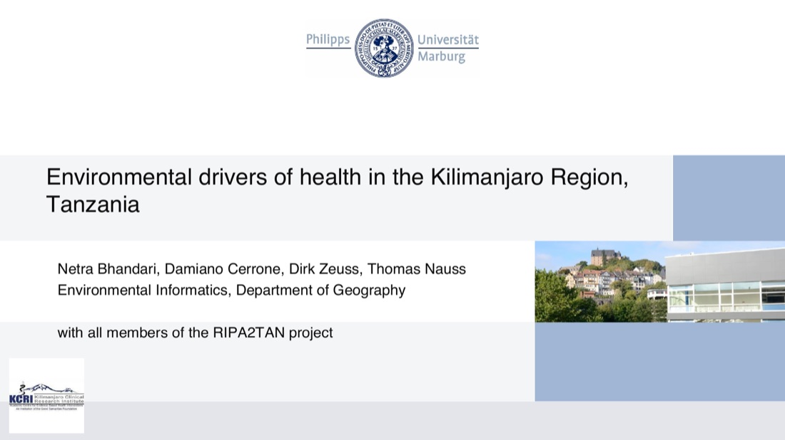

RIPA2TAN — Environmental Drivers of Health in the Kilimanjaro Region
A Marburg University medical research team studying asthma and atopy in the Kilimanjaro Region needed to know how much of the difference between an urban site and a rural site came down to environment, not just genetics or healthcare access. That required turning satellite imagery into something a clinical epidemiology team could actually use.
Part of RIPA2TAN (“Risk and Preventive factors for the development of Atopy and Asthma in Kilimanjaro Region, Tanzania”), a clinical cohort study run by Marburg University Hospital with the Kilimanjaro Clinical Research Institute, comparing urban Moshi against rural/semi-urban Siha. SPIN Unit contributed the geospatial environmental-exposure component (work packages 1 and 2) alongside the clinical fieldwork team.
Assembled a genuinely multi-source Earth-observation stack — Copernicus 100m land cover, Sentinel-2 10m land cover, Landsat NDVI, ASTER elevation, WorldClim climate data, SoilGrids, and OpenStreetMap infrastructure — and applied multi-radius spatial buffer analysis (from 30m out to 3km) around household and district locations to compute land-use composition, greenness, and diversity as candidate environmental predictors of disease.
Delivered as a 39-page analysis presentation midway through the broader clinical study, ahead of the main patient data collection phase in autumn 2022.
{kind=link}

Open full size ↗